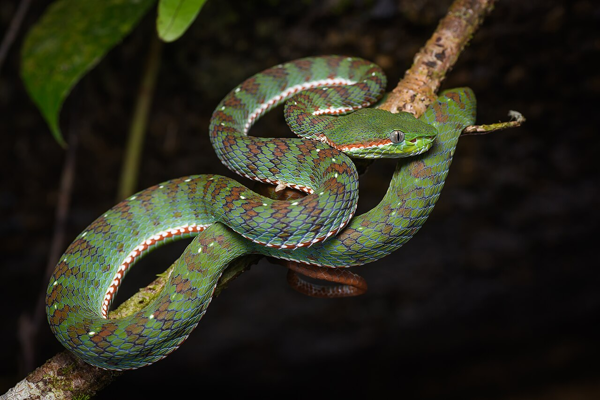

Snake
Legless reptiles that slither through forests and deserts.
- Species: Serpentes
- Diet: Carnivore
- Size: 1-20 ft long
- Weight: 0.5-200 lbs
- Life span: 9-25 years
- Habitat: Forests, grasslands, deserts
- Found: Worldwide
- Can be pet: Sometimes
Trivia: Some snakes can detect heat from prey using specialized pit organs.